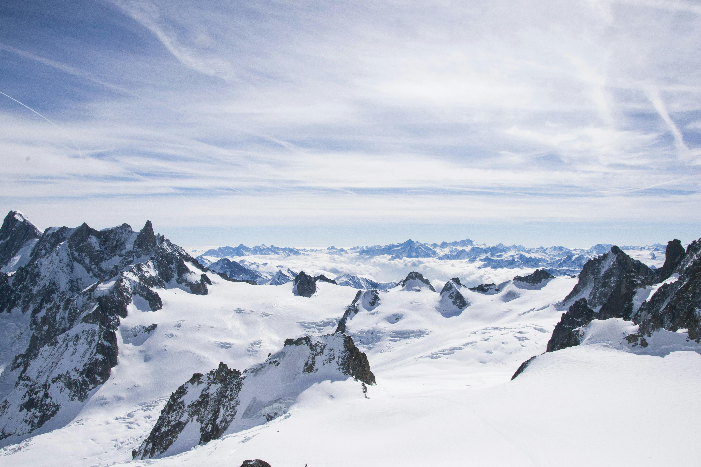

Skijanje je rekreativna aktivnost, sport i način putovanja preko snijega pomoću dugih, ravnih dasaka zvanih skije koje su pričvršćene za čizme. Prirodno se razvilo iz praktičnih potreba, a prvo natjecanje bila je utrka u skijaškom trčanju u Norveškoj 1843. godine. Moderno skijanje razvilo se nakon knjige Fridtjofa Nansena o njegovoj ekspediciji preko Grenlanda 1888.–89. godine. Poboljšane vezice oko 1860. omogućile su bolju kontrolu pri spuštanju, što je dovelo do modernog alpskog skijanja. Skijaške žičare iz 1930-ih uvelike su povećale popularnost alpskog skijanja u Europi i Sjevernoj Americi. Danas se skije izrađuju od materijala poput drva, stakloplastike i plastike. Natjecateljsko skijanje uključuje alpske, nordijske i slobodne discipline, kao i brzoskijaške i snowboard događaje. Fédération Internationale de Ski (FIS) je svjetska krovna organizacija za skijanje. Povijest Skijanje za prijevoz, lov i rat Skijanje je prapovijesna aktivnost; najstarije poznate skije datiraju između 8000. i 7000. pr. Kr. i otkrivene su u Rusiji. Rane skije pronađene su u mnogim područjima sjeverne Europe: 4000 godina star petroglif koji prikazuje skije pronađen je blizu Arktičkog kruga u Norveškoj, a stotine fragmenata skija starih od 1000 do 3500 godina pronađene su u močvarama u Švedskoj, Norveškoj i Finskoj. Neke od prvih skija bile su kratke i široke, više nalik krpljama nego modernim skijama. Skijanje se svakako nije ograničavalo samo na Europu, jer prvi pisani zapisi o skijanju potječu iz kineske dinastije Han (206. pr. Kr. – 220. n. e.) i opisuju skijanje u sjevernoj Kini. Mnogi narodi koji su živjeli u klimama sa snijegom tijekom više mjeseci u godini razvili su neki oblik skijanja. Sami (Laponci) vjerovali su da su oni izumitelji skijanja, a njihova upotreba skija za lov bila je poznata još od rimskih vremena. Osim toga, Vikinzi su koristili skije od 9. do 11. stoljeća. Skije se i danas povremeno koriste za prijevoz u ruralnim područjima Rusije i skandinavskih zemalja. Skijanje se također dugo koristilo u vojne svrhe. Norveški vojnici na skijama izviđali su prije Bitke kod Osla (1200.). Skijaške trupe korištene su u Švedskoj 1452., a od 15. do 17. stoljeća skije su se koristile u ratovima u Finskoj, Norveškoj, Rusiji, Poljskoj i Švedskoj. Kapetan Jens Emmahusen napisao je prvi skijaški priručnik za Norvežane 1733. godine. Od 1767. održavaju se vojna skijaška natjecanja s novčanim nagradama. Ta natjecanja mogla su biti preteča biatlona, koji spaja skijanje i gađanje. Vojno skijanje nastavilo se i u 20. stoljeću, gdje su snježni uvjeti i teren pogodovali izviđačima i vrstama pješaštva na skijama s prednošću prvog udara na male ciljeve. Posebno su skijaške trupe sudjelovale i u Prvom i u Drugom svjetskom ratu. Mnogi veterani, osobito iz Drugog svjetskog rata, bili su vrlo aktivni u promicanju skijanja nakon povratka u civilni život. Skijanje za rekreaciju i sport Skijanje raste u popularnosti Skijanje kao rekreacija i sport bio je prirodan razvoj iz njegovih praktičnih primjena. Jedno od prvih natjecanja bila je utrka u skijaškom trčanju u Tromsøu u Norveškoj 1843. godine. U Kaliforniji 1860-ih održavana su natjecanja na ravnim spustovima s 3,7 metara dugim skijama, pričvršćenim samo na prste (peta je bila slobodna). Prvo veliko natjecanje u skijaškim skokovima održano je u Christianiji (danas Oslo) 1879. Skijanje kao sport u Europi razvilo se uglavnom nakon objave knjige „Prvi prijelaz Grenlanda” (Paa ski over Grønland; 1890), izvještaja Fridtjofa Nansena o njegovoj ekspediciji na skijama 1888.–89. Prije sredine 19. stoljeća skijanje je bilo ograničeno primitivnim vezovima koji su skiju pričvršćivali za čizmu samo na prstima, što je činilo gotovo nemogućim spuštanje niz strme padine ili padine koje su zahtijevale znatno manevriranje. Prema predaji (iako je danas predmet rasprave), oko 1860. Norvežanin Sondre Nordheim vezao je mokre brezove korijene oko svojih čizama od prstiju do pete kako bi ih čvrsto učvrstio na skijama. Nakon što su se osušili, korijeni su postali kruti i pružali su bolju stabilnost i kontrolu od ranijih kožnih remena. Tom inovacijom postalo je moguće moderno spustovsko skijanje, odnosno alpsko skijanje, s karakterističnom brzinom i zavojima. U početku su alpski skijaši morali pješačiti uzbrdo prije nego bi se mogli spustiti, što je ozbiljno ograničavalo broj spuštanja u jednom danu, čak i ako su imali dovoljno snage za stalno penjanje. To se promijenilo uvođenjem različitih uređaja 1930-ih – od vučnica do sjedežnica i gondola – koji su uklonili naporne uspone i omogućili višestruke spustove dnevno. Time je alpsko skijanje postalo sve popularnije, najprije u Europi i Sjevernoj Americi, a kasnije i u Australiji, Novom Zelandu, Čileu, Argentini i Japanu. U Sloveniji postoji tradicija nordijskog skijanja još od 17. stoljeća, a u 1920-ima i 30-ima uvedeno je i alpsko skijanje. Sličan razvoj dogodio se u Grčkoj, Portugalu, Libanonu, Turskoj i Iranu. Pireneji su bili poprište skijaških natjecanja već prije Prvog svjetskog rata, a skijaši su bili aktivni i u planinama Atlasa u sjevernoj Africi prije 1914. Televizijski prijenosi skijaških događaja, koji su počeli 1950-ih, značajno su doprinijeli popularnosti skijanja u cijelom svijetu. Još jedan važan čimbenik bila je pojava strojeva za umjetni snijeg krajem 1950-ih, koji su jamčili dovoljne uvjete čak i kad vrijeme nije bilo povoljno. Nordijsko skijanje Nordijsko skijanje obuhvaća tehnike i discipline koje su se razvile na brežuljkastom terenu Norveške i drugih skandinavskih zemalja. Moderna nordijska natjecanja uključuju utrke u skijaškom trčanju (uključujući štafetu) i natjecanja u skijaškim skokovima. Kombinacija nordijskog skijanja posebna je disciplina koja se sastoji od utrke u skijaškom trčanju na 15 km i natjecanja u skokovima, pri čemu se pobjednik određuje na temelju bodova u obje discipline. Postoji mnogo čimbenika koji razlikuju pojedine utrke u skijaškom trčanju, poput vrste starta, stila skijanja i duljine staze. Do 1970-ih postojao je samo jedan stil, sada poznat kao klasični, u kojem skijaši prate paralelne tragove. Učinkovitiji stil popularizirao je Amerikanac Bill Koch kada je koristio „klizajući” korak, gurajući skije izvan paralelnih tragova. Ova inovativna tehnika sada se koristi u nekim utrkama, zahtijevajući dulje štapove i kraće skije te više cipele s boljom potporom za gležanj. Pojedinačne nordijske discipline – u skijaškom trčanju i skijaškim skokovima – prvi su put uvrštene na Olimpijske igre u Chamonixu, Francuska, 1924. Alpsko skijanje Do početka 20. stoljeća utrke u alpskom skijanju pridružile su se postojećim natjecanjima nordijskog skijanja. U početku su ih nordijski skijaši odbacivali, ali 1930. međunarodna skijaška federacija FIS (osnovana 1924.) uvrstila je alpske discipline. Moderno alpsko natjecateljsko skijanje podijeljeno je u četiri discipline – slalom, veleslalom, superveleslalom (super-G) i spust – svaka progresivno brža i zahtjevnija od prethodne. Alpsko skijanje debitiralo je na Olimpijskim igrama 1936. u Garmisch-Partenkirchenu u Njemačkoj. Od tada su uvedene i nove discipline, uključujući kombinacije različitih disciplina. Slobodno skijanje Slobodno skijanje usmjereno je na akrobatiku i uključuje tri discipline: akro, akrobatske skokove i mogule. Uvedeno je u Europi 1930-ih, a s vremenom je popularnost rasla, osobito u Sjevernoj Americi 1950-ih i 60-ih. Disciplina je službeno uvrštena u program Zimskih olimpijskih igara 1988. u Calgaryju kao pokazni sport, a od 1992. i kao službena olimpijska disciplina.